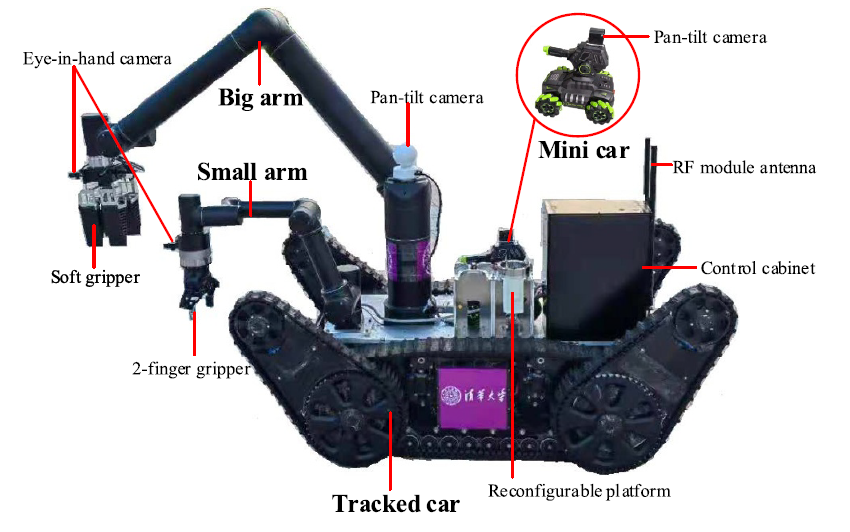

|
|
I am an associate professor at the School of Future Technology (Institute of Artificial Intelligence), Shanghai University. I received my B.S. and Ph.D. degrees from Tianjin University in Control Science and Engineering in 2014 and 2019, respectively. From 2016 to 2017, I was a Visiting Scholar at the State University of New York at Buffalo. From 2017 to 2018, I was a Visiting Scientist at Cornell University. From 2019 to 2022, I was a Postdoc at Tsinghua University. My research interests include legged robots, reinforcement learning, and embodied AI. |
— 2023 —
 |
From Knowing to Doing: Learning Diverse Motor Skills through Instruction Learning Shoujie Li, Linqi Ye, Haixin Yu, Xianghui Yin, Chongkun Xia, Wenbo Ding, Xueqian Wang, Bin Liang Soft Robotics, 2023 |
|
Visual–Tactile Fusion for Transparent Object Grasping in Complex Backgrounds Shoujie Li, Haixin Yu, Wenbo Ding, Houde Liu, Linqi Ye, Chongkun Xia, Xueqian Wang, Xiao-Ping Zhang IEEE Transactions on Robotics, 2023 |
|
 |
Bipedal Walking Control by Using Acceleration Factor Linqi Ye, Xueqian Wang, Houde Liu, Bin Liang, Bo Yuan Nonlinear Dynamics, 2023 [video] |
|  |
HeterBot: A heterogeneous mobile manipulation robot for versatile operation Linqi Ye, Jiatai Guo, Jiayi Li, Houde Liu, Xueqian Wang, Bin Liang IET Cyber‐Systems and Robotics, 2023 [video] |
— 2022 —
 |
Unsupervised Reinforcement Learning with Contrastive Intrinsic Control Michael Laskin, Hao Liu, Xue Bin Peng, Denis Yarats, Aravind Rajeswaran, Pieter Abbeel Neural Information Processing Systems (NeurIPS 2022) [Project page] [Paper] |
 |
PADL: Language-Directed Physics-Based Character Control Jordan Juravsky, Yunrong Guo, Sanja Fidler, Xue Bin Peng ACM SIGGRAPH Asia 2022 [Project page] [Paper] |
 |
Adversarial Motion Priors Make Good Substitutes for Complex Reward Functions Alejandro Escontrela, Xue Bin Peng, Wenhao Yu, Tingnan Zhang, Atil Iscen, Ken Goldberg, Pieter Abbeel IEEE International Conference on Intelligent Robots and Systems (IROS 2022) [Project page] [Paper] |
 |
Creating a Dynamic Quadrupedal Robotic Goalkeeper with Reinforcement Learning Xiaoyu Huang, Zhongyu Li, Yanzhen Xiang, Yiming Ni, Yufeng Chi, Yunhao Li, Lizhi Yang, Xue Bin Peng, and Koushil Sreenath arXiv Preprint 2022 [Project page] [Paper] |
 |
Hierarchical Reinforcement Learning for Precise Soccer Shooting Skills using a Quadrupedal Robot Yandong Ji, Zhongyu Li, Yinan Sun, Xue Bin Peng, Sergey Levine, Glen Berseth, Koushil Sreenath IEEE International Conference on Intelligent Robots and Systems (IROS 2022) [Project page] [Paper] |
 |
ASE: Large-Scale Reusable Adversarial Skill Embeddings for Physically Simulated Characters Xue Bin Peng, Yunrong Guo, Lina Halper, Sergey Levine, Sanja Fidler ACM Transactions on Graphics (Proc. SIGGRAPH 2022) [Project page] [Paper] |
 |
Legged Robots that Keep on Learning: Fine-Tuning Locomotion Policies in the Real World Laura Smith, J. Chase Kew, Xue Bin Peng, Sehoon Ha, Jie Tan, Sergey Levine IEEE International Conference on Robotics and Automation (ICRA 2022) [Project page] [Paper] |
— 2021 —
 |
Deep Reinforcement Learning for Modeling Human Locomotion Control in Neuromechanical Simulation Seungmoon Song, Łukasz Kidziński, Xue Bin Peng, Carmichael Ong, Jennifer Hicks, Sergey Levine, Christopher G. Atkeson, Scott L. Delp Journal of NeuroEngineering and Rehabilitation 2021 [Project page] [Paper] |
 |
Offline Meta-Reinforcement Learning with Advantage Weighting Eric Mitchell, Rafael Rafailov, Xue Bin Peng, Sergey Levine, Chelsea Finn International Conference on Machine Learning (ICML 2021) [Project page] [Paper] |
 |
AMP: Adversarial Motion Priors for Stylized Physics-Based Character Control Xue Bin Peng, Ze Ma, Pieter Abbeel, Sergey Levine, Angjoo Kanazawa ACM Transactions on Graphics (Proc. SIGGRAPH 2021) [Project page] [Paper] |
 |
Reinforcement Learning for Robust Parameterized Locomotion Control of Bipedal Robots Zhongyu Li, Xuxin Cheng, Xue Bin Peng, Pieter Abbeel, Sergey Levine, Glen Berseth, Koushil Sreenath IEEE International Conference on Robotics and Automation (ICRA 2021) [Project page] [Paper] |
— 2020 —
 |
Learning Agile Robotic Locomotion Skills by Imitating Animals Xue Bin Peng, Erwin Coumans, Tingnan Zhang, Tsang-Wei Edward Lee, Jie Tan, Sergey Levine Robotics: Science and Systems (RSS 2020) Best Paper Award [Project page] [Paper] |
 |
Reinforcement Learning with Competitive Ensembles of Information-Constrained Primitives Anirudh Goyal, Shagun Sodhani, Jonathan Binas, Xue Bin Peng, Sergey Levine, Yoshua Bengio International Conference on Learning Representations (ICLR 2020) [Project page] [Paper] |
— 2019 —
 |
Reward-Conditioned Policies Aviral Kumar, Xue Bin Peng, Sergey Levine arXiv Preprint 2019 [Project page] [Paper] |
 |
On Learning Symmetric Locomotion Farzad Adbolhosseini, Hung Yu Ling, Zhaoming Xie, Xue Bin Peng, Michiel van de Panne ACM SIGGRAPH Conference on Motion, Interaction, and Games (MIG 2019) [Project page] [Paper] |
 |
Advantage-Weighted Regression: Simple and Scalable Off-Policy Reinforcement Learning Xue Bin Peng, Aviral Kumar, Grace Zhang, Sergey Levine arXiv Preprint 2019 [Project page] [Paper] |
 |
MCP: Learning Composable Hierarchical Control with Multiplicative Compositional Policies Xue Bin Peng, Michael Chang, Grace Zhang, Pieter Abbeel, Sergey Levine Neural Information Processing Systems (NeurIPS 2019) [Project page] [Paper] |
 |
Variational Discriminator Bottleneck: Improving Imitation Learning, Inverse RL, and GANs by Constraining Information Flow Xue Bin Peng, Angjoo Kanazawa, Sam Toyer, Pieter Abbeel, Sergey Levine International Conference on Learning Representations (ICLR 2019) [Project page] [Paper] |
— 2018 —
 |
SFV: Reinforcement Learning of Physical Skills from Videos Xue Bin Peng, Angjoo Kanazawa, Jitendra Malik, Pieter Abbeel, Sergey Levine ACM Transactions on Graphics (Proc. SIGGRAPH Asia 2018) [Project page] [Paper] |
 |
DeepMimic: Example-Guided Deep Reinforcement Learning of Physics-Based Character Skills Xue Bin Peng, Pieter Abbeel, Sergey Levine, Michiel van de Panne ACM Transactions on Graphics (Proc. SIGGRAPH 2018) [Project page] [Paper] |
 |
Sim-to-Real Transfer of Robotic Control with Dynamics Randomization Xue Bin Peng, Marcin Andrychowicz, Wojciech Zaremba, Pieter Abbeel IEEE International Conference on Robotics and Automation (ICRA 2018) [Project page] [Paper] |
— 2017 —
 |
DeepLoco: Developing Locomotion Skills Using Hierarchical Deep Reinforcement Learning Xue Bin Peng, Glen Berseth, KangKang Yin, Michiel van de Panne ACM Transactions on Graphics (Proc. SIGGRAPH 2017) [Project page] [Paper] |
 |
Learning Locomotion Skills Using DeepRL: Does the Choice of Action Space Matter? Xue Bin Peng, Michiel van de Panne ACM SIGGRAPH / Eurographics Symposium on Computer Animation 2017 Best Student Paper Award [Project page] [Paper] |
— 2016 —
 |
Terrain-Adaptive Locomotion Skills Using Deep Reinforcement Learning Xue Bin Peng, Glen Berseth, Michiel van de Panne ACM Transactions on Graphics (Proc. SIGGRAPH 2016) [Project page] [Paper] |
— 2015 —
 |
Dynamic Terrain Traversal Skills Using Reinforcement Learning Xue Bin Peng, Glen Berseth, Michiel van de Panne ACM Transactions on Graphics (Proc. SIGGRAPH 2015) [Project page] [Paper] |
 |
Ph.D. Thesis Acquiring Motor Skills Through Motion Imitation and Reinforcement Learning University of California, Berkeley 2021 [Project page] [Thesis] |
 |
M.Sc. Thesis Developing Locomotion Skills with Deep Reinforcement Learning University of British Columbia 2017 [Project page] [Thesis] |